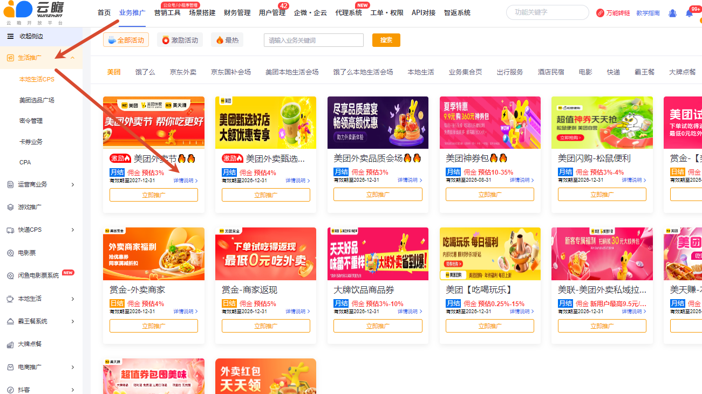

业务怎么取链？
进入“云瞻助手”小程序，使用注册手机号登录，选择要推广的业务并获取链接。电脑端可在【业务推广】→【生活推广】→【本地生活 CPS】查看活动列表。
完整覆盖业务取链、五类推广方式、佣金和归因查询、链接异常、活动与激励、密令申请、美团 OpenID 授权及酒店替代方案。
进入“云瞻助手”小程序，使用注册手机号登录，选择要推广的业务并获取链接。电脑端可在【业务推广】→【生活推广】→【本地生活 CPS】查看活动列表。
| 方式 | 适用场景 | 原文重点 |
|---|---|---|
| 直接取链 | 个人、小规模推广 | 无需搭建系统，费用按当前版本规则 |
| 公众号 / 小程序 | 个体户、企业、私域 | 可结合企微和团队分佣 |
| API 对接 | 有技术团队和自有前端 | 付费获取接口，自行开发页面 |
| 插件对接 | 已有网站、App 或小程序品牌 | 需相应系统与技术能力 |
| 代理系统 | 有代理团队、需要分级佣金 | 可配置不同代理等级和业务模块 |
源文档曾使用“直接取链收 10% 技术服务费，部分付费版本/API/插件可免”等旧话术。现行费用还会受业务、版本、个人/企业实名和结算方式影响，不得把旧数字作为全平台承诺；应查询当前版本页和对应业务结算规则。
进入【业务推广】→【生活推广】→【本地生活 CPS】，活动卡片会显示佣金；打开“详情说明”查看更具体的规则。不得仅凭历史群消息答复。

同一路径进入活动卡片的“详情说明”，查看该活动归因规则。不同活动可能采用不同有效期、最后点击或授权条件，不能用一个业务的规则推断另一个。
源文档提到 H5 常见有效期约 30 天，该期限仅作排查提示，最终以后台当前显示为准。
可推广范围以后台当前可见活动为准；新品上线关注交流群通知。希望平台对接某活动时，先向用户收集正式活动链接，再由商务核实渠道和接入条件。
禁止官方平台站内违规引流、炸群、购买“站内粉/截流粉”，禁止“免费、免单、0 元购”等违规或夸大宣传。美团私域引流、淘宝闪购品牌素材及超低价表述、京东评论区和商品页引流等专项限制见《推广合规与风险规则》。
取链时核对活动名称和活动页面；名称、页面和规则一致时才可判断为同一活动。无法确认时将链接提交客服核查。
多个链接可能对应不同活动页面、佣金政策、适用人群和归因规则。先逐一打开详情说明，按推广对象和渠道选择，不默认推荐佣金数字最高但限制不匹配的链接。
以源文档的美团外卖节为例，需要核对有效核销金额、订单状态、排除商品、单量/转化门槛；取消、退款、风控等失效订单通常不计入。原文中的“实付不少于 1 元”“下单率建议不低于 6%”只是历史活动示例，必须打开当期活动规则。
在【所有订单】筛选活动日期和所属业务，下载明细，按有效核销、失效状态、活动排除项和最低实付逐条筛选，再与激励看板或结算通知比对。
源文档记录美团、京东可申请首个密令，追加密令或淘宝闪购密令需要近期订单达标并提交截图。历史门槛包括“美团/京东近 2 日外卖订单大于 10 单”“淘宝闪购近一周大于 200 单”，目前统一标记为待业务确认。
进入【密令管理】查看有效期并申请续期。源文档记录常见有效期约 30 天、美团可能在到期前 7 天且近 30 单达标时申请，但官方也可能到期后才处理，存在时间差；以后台状态和短信通知为准。
这是美团联盟要求的推广者备案，一次性获取美团 OpenID，用于识别推广身份并对应推广订单，不是登录美团账号。推广美团相关业务时按页面提示完成，营业执照或法人信息不能替代 OpenID 授权。
源文档口径为：平台只作为备案通道，不获得登录、资金、借款或账号操作权限。客服应基于当前授权协议解释可访问范围，不使用“绝对不存在风险”等超范围承诺。
原文将其描述为 OpenID 备案而非持续绑定。完成授权后，为避免旧链路不满足新备案要求，建议重新获取全部美团相关业务链接并测试跟单。
源文档记录：需要报备的部分美团酒店活动暂不开放新权限；没有报备提示的活动可正常取链。该状态随渠道变化，必须先看后台。
可查看当前后台的飞猪酒店、同程酒店、酒店集合页等无需相同报备的活动。替代推荐前仍要核对佣金、可推广范围和结算周期。